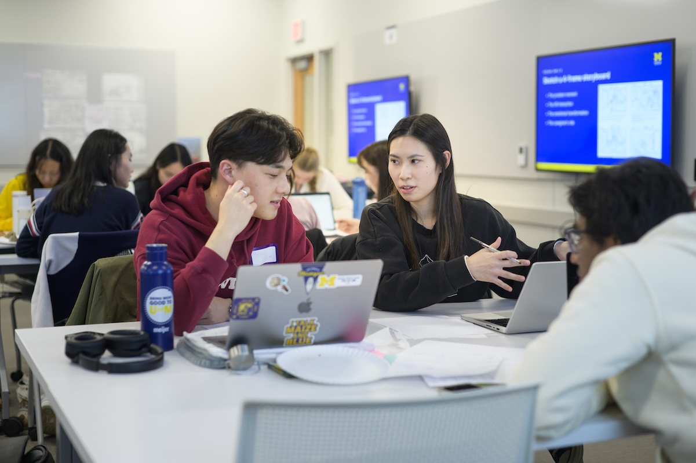
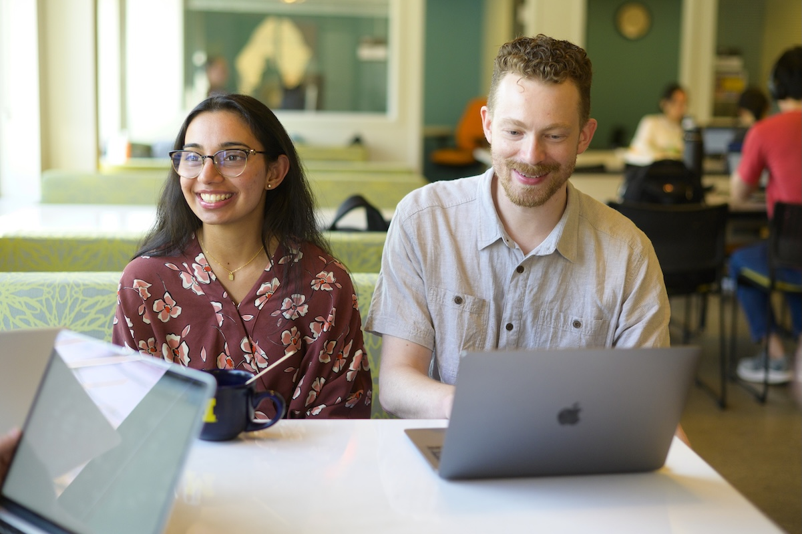

Navigating Your Active Project
Once your project begins, your team will put its plans into practice. Use this guide to manage tasks,
communicate with your partner, learn from research, and respond to feedback throughout the experience.

Learning When Plans Change
Real projects do not always follow the original plan. Your research may reveal a different need,
a task may take longer than expected, or your partner's priorities may change. These situations
are opportunities to practice communication and problem-solving.
When something changes, discuss it with your team and partner instead of quietly adding more work.
Compare new requests with the agreed project scope and decide what is realistic. Keep a record of
the decisions so that everyone understands the updated plan.
Phase 3: Managing and Executing in the Field
Track Tasks and Share Progress
Break larger goals into tasks with clear responsibilities and milestones. Review what has been
completed, what is coming next, and where the team needs help. A shared record makes it easier
to notice delays before they affect the whole project.
Use the Project
Management Worksheet
to organize the scope, team roles, and timeline. Return to it when the team needs to update its plan.
Keep Your Partner Informed
Regular updates help your partner understand how the work is developing. Share progress,
explain challenges, and identify decisions or feedback you need. Follow the communication
practices agreed on at the beginning of the experience.
- Completed work: Summarize what the team has finished since the last update.
- Next steps: Explain what you plan to work on next.
- Questions and challenges: Identify anything that needs discussion or support.
- Feedback needed: Explain what you would like the partner to review.
Learn from Fieldwork
Observations and conversations can help you understand the people and settings involved in your
project. Keep track of what you actually observed and distinguish it from your team's interpretations.
Look for patterns while staying open to information that challenges your assumptions.
The ELO content document lists the HFLI AEIOU Worksheet for organizing observations into
Activities, Environments, Interactions, Objects, and Users. It also lists the HFLI User-Needs-Insights
Worksheet for connecting research findings to design decisions.
Use Feedback to Improve the Work
Share work while there is still time to revise it. Ask focused questions about what is useful,
unclear, or missing. If feedback is difficult to understand, ask for an example before deciding
how to respond.
Review feedback as a team and agree on the next changes. When teammates disagree, return to the
project goals and the needs of the people affected by the work. Explain important decisions to
your partner and note questions that still need an answer.
Questions for a Team Check-In
- What progress have we made toward our current milestone?
- Does everyone understand their responsibilities?
- What have we learned that changes our understanding of the project?
- Are new requests changing the agreed scope?
- Whose feedback or perspective is missing?
- What should we adjust before our next check-in?

A Suggested Progress Review
- Review the plan: Compare completed work with the current goals and timeline.
- Discuss findings: Share research observations, feedback, and challenges.
- Choose adjustments: Agree on priorities and discuss scope changes with the partner.
- Assign next steps: Record who will do each task and when to review it.
- Reflect: Note what you learned and what you want to improve in the next stage.
Additional Resources for Active Projects
The ELO Content
Document
describes the following resources and their purposes.
- HFLI Feedback Worksheet: Organize feedback discussions with students, instructors, and
partners.
- Student Project Communications Plan Example & Template: Plan meeting frequency,
communication channels, and expected response times.
- Sponsor Dashboard Template - Organizational Excellence: Summarize project status for
external partners.
- Ginsberg Center - Community Engagement Cases Handout: Explore situations involving
ethical questions and possible responses.
For broader guidance on working with community partners, visit the
Ginsberg Center partnership
toolkit.
If your team needs to revisit its initial agreements, return to Starting Your
Experience.